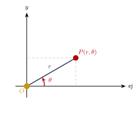
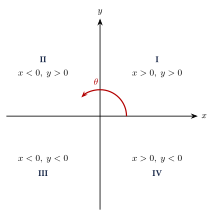
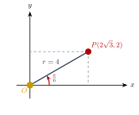
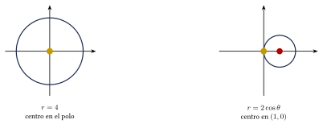
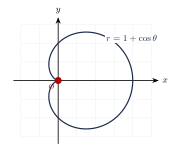
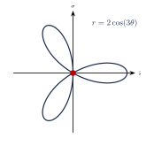

Capítulo 38
Coordenadas polares
IPN
El sistema polar ubica un punto mediante una distancia y un ángulo. Este sistema es útil para describir curvas con simetría radial, como circunferencias, cardioides y rosas polares.
En este capítulo aprenderás a representar puntos, convertir coordenadas y reconocer algunas ecuaciones polares básicas.
38.1 Sistema de coordenadas polares#
El sistema polar está formado por:
- un punto fijo \(O\), llamado polo;
- una semirrecta con origen en \(O\), llamada eje polar.
Un punto se representa mediante:
donde:
- \(|r|\) es la distancia entre el polo y el punto;
- \(\theta\) es el ángulo medido desde el eje polar.
Por convención, los ángulos positivos se miden en sentido antihorario y los negativos en sentido horario.

38.2 Representaciones equivalentes#
La representación polar de un punto no es única.
Para cualquier número entero \(n\):
porque los ángulos difieren en vueltas completas.
También:
Un radio negativo indica que el punto se localiza en la dirección opuesta al ángulo dado.
El punto:
también puede escribirse como:
o como:
El polo puede representarse como:
para cualquier valor de \(\theta\).
38.3 Conversión entre coordenadas#
38.3.1 De polares a cartesianas#
Si un punto tiene coordenadas polares:
sus coordenadas cartesianas son:
y:
38.3.2 De cartesianas a polares#
Si un punto tiene coordenadas cartesianas:
entonces:
El ángulo satisface:
cuando \(x\neq0\).
La expresión:
no determina por sí sola el cuadrante. Siempre debe observarse el signo de \(x\) y de \(y\).
- Cuadrante I: \[x>0,\qquad y>0.\]
- Cuadrante II: \[x<0,\qquad y>0.\]
- Cuadrante III: \[x<0,\qquad y<0.\]
- Cuadrante IV: \[x>0,\qquad y<0.\]

38.4 Ejemplos de conversión#
Convierte:
a coordenadas cartesianas.
Ver solución
Por tanto:

Convierte el punto cartesiano:
a coordenadas polares.
Ver solución
Calculamos el radio:
El punto se encuentra en el segundo cuadrante.
El ángulo de referencia es:
Por tanto:
Una representación polar es:
Convierte el punto:
a coordenadas polares.
Ver solución
El punto se encuentra sobre el eje \(y\) positivo, por lo que:
Por tanto:
38.5 Fórmulas de conversión#
También:
y:
La identidad:
es especialmente útil para convertir ecuaciones completas entre los sistemas cartesiano y polar.
38.6 Conversión de ecuaciones#
38.6.1 De polar a cartesiana#
Para convertir una ecuación polar se sustituyen:
y:
Convierte la ecuación:
a coordenadas cartesianas.
Ver solución
Elevamos al cuadrado:
Como:
obtenemos:
La gráfica es una circunferencia con centro en el origen y radio \(4\).
Convierte:
a coordenadas cartesianas.
Ver solución
Multiplicamos por \(r\):
Sustituimos:
Completamos el cuadrado:
Por tanto:
La gráfica es una circunferencia con centro:
y radio:
38.6.2 De cartesiana a polar#
Para convertir una ecuación cartesiana se sustituyen:
y:
Convierte:
a coordenadas polares.
Ver solución
Sustituimos:
Para los puntos diferentes del polo, dividimos entre \(r\):
Al dividir una ecuación entre \(r\), debe verificarse si el polo:
también pertenece a la curva.
38.7 Curvas polares básicas#
38.7.1 Circunferencias#
representa una circunferencia con centro en el polo y radio \(|a|\).
representa una circunferencia con centro:
y radio:
representa una circunferencia con centro:
y radio:

38.7.2 Cardioides#
Las ecuaciones:
y:
representan cardioides.
La función trigonométrica determina su eje de simetría.
Identifica y grafica:
Ver solución
La ecuación tiene la forma:
con:
Es una cardioide simétrica respecto del eje polar.
Sus valores principales son:
La curva pasa por el polo cuando:

38.7.3 Rosas polares#
Las ecuaciones:
y:
representan rosas polares.
El número de pétalos depende de \(n\):
- si \(n\) es impar, la rosa tiene \(n\) pétalos;
- si \(n\) es par, la rosa tiene \(2n\) pétalos.

38.8 Simetrías#
Las siguientes sustituciones permiten comprobar posibles simetrías.
Respecto del eje polar
Sustituir:
\[\theta \longrightarrow -\theta.\]Respecto del eje vertical
Sustituir:
\[\theta \longrightarrow \pi-\theta.\]Respecto del polo
Sustituir:
\[\theta \longrightarrow \theta+\pi\]o:
\[r \longrightarrow -r.\]
Si la ecuación no cambia después de una sustitución, la curva posee la simetría correspondiente.
Si la ecuación cambia, la prueba no demuestra que la simetría sea imposible. Puede ser necesario estudiar la curva por otros medios.
38.9 Procedimiento rápido#
Para convertir un punto polar#
- Calcula: \[x=r\cos\theta.\]
- Calcula: \[y=r\sen\theta.\]
Para convertir un punto cartesiano#
- Calcula: \[r=\sqrt{x^2+y^2}.\]
- Obtén el ángulo de referencia.
- Ajusta el ángulo según el cuadrante.
Para graficar una ecuación polar#
- Identifica el tipo de curva.
- Busca posibles simetrías.
- Encuentra los valores para los que: \[r=0.\]
- Evalúa algunos ángulos notables.
- Traza los puntos y únelos suavemente.
38.10 Resumen#
Representaciones equivalentes:
Curvas básicas:
38.11 Errores frecuentes#
Recuerda:
- Las representaciones polares no son únicas.
- Un radio negativo coloca el punto en la dirección opuesta.
- El ángulo debe ajustarse según el cuadrante.
- La calculadora debe estar en radianes si los ángulos se expresan con \(\pi\).
- La relación correcta es: \[r^2=x^2+y^2.\]
- No debe confundirse: \[r\cos\theta=x\] con: \[\cos\theta=x.\]
- Al dividir entre \(r\), debe comprobarse si el polo pertenece a la curva.
- En una rosa polar, el número de pétalos depende de si \(n\) es par o impar.
38.12 Ejercicios propuestos#
Convierte a coordenadas cartesianas:
Ver solución
Sustituimos \(r=2\) y \(\theta=\frac{\pi}{4}\): \[x=2\cos\left(\frac{\pi}{4}\right)=2\left(\frac{\sqrt{2}}{2}\right)=\sqrt{2},\] \[y=2\sen\left(\frac{\pi}{4}\right)=2\left(\frac{\sqrt{2}}{2}\right)=\sqrt{2}.\] Por tanto, el punto es \((\sqrt{2},\sqrt{2})\).
Convierte a coordenadas cartesianas:
Ver solución
Sustituimos \(r=6\) y \(\theta=\frac{\pi}{3}\): \[x=6\cos\left(\frac{\pi}{3}\right)=6\left(\frac{1}{2}\right)=3,\] \[y=6\sen\left(\frac{\pi}{3}\right)=6\left(\frac{\sqrt{3}}{2}\right)=3\sqrt{3}.\] Por tanto, el punto es \((3,3\sqrt{3})\).
Convierte a coordenadas cartesianas:
Ver solución
Sustituimos \(r=-4\) y \(\theta=\frac{\pi}{6}\): \[x=-4\cos\left(\frac{\pi}{6}\right)=-4\left(\frac{\sqrt{3}}{2}\right)=-2\sqrt{3},\] \[y=-4\sen\left(\frac{\pi}{6}\right)=-4\left(\frac{1}{2}\right)=-2.\] Por tanto, el punto es \((-2\sqrt{3},-2)\).
Convierte a coordenadas polares:
Ver solución
El radio es: \[r=\sqrt{3^2+3^2}=\sqrt{18}=3\sqrt{2}.\] El ángulo satisface \(\tan\theta=\frac{3}{3}=1\). Como el punto está en el primer cuadrante, \(\theta=\frac{\pi}{4}\). Por tanto, las coordenadas polares son \(\left(3\sqrt{2},\frac{\pi}{4}\right)\).
Convierte a coordenadas polares:
Ver solución
El radio es: \[r=\sqrt{(-\sqrt{3})^2+1^2}=\sqrt{3+1}=2.\] El ángulo satisface \(\tan\theta=-\frac{1}{\sqrt{3}}\). El punto está en el segundo cuadrante, por lo que el ángulo es \(\theta=\pi-\frac{\pi}{6}=\frac{5\pi}{6}\). Por tanto, las coordenadas polares son \(\left(2,\frac{5\pi}{6}\right)\).
Convierte a coordenadas polares:
Ver solución
El radio es \(r=\sqrt{0^2+(-5)^2}=5\). El punto está sobre el eje \(y\) negativo, así que el ángulo es \(\theta=\frac{3\pi}{2}\). Por tanto, las coordenadas polares son \(\left(5,\frac{3\pi}{2}\right)\).
Convierte a coordenadas cartesianas e identifica la curva:
Ver solución
Elevamos al cuadrado ambos lados: \[r^2=9.\] Sustituimos \(r^2=x^2+y^2\): \[x^2+y^2=9.\] Representa una circunferencia con centro en el origen y radio \(3\).
Convierte a coordenadas cartesianas e identifica la curva:
Ver solución
Multiplicamos la ecuación por \(r\): \[r^2=4r\sen\theta.\] Sustituimos por coordenadas cartesianas: \[x^2+y^2=4y.\] Agrupando términos y completando el cuadrado: \[x^2+y^2-4y+4=4,\] \[x^2+(y-2)^2=4.\] Representa una circunferencia con centro en \((0,2)\) y radio \(2\).
Identifica la curva, su simetría y su orientación:
Ver solución
La ecuación \(r=1+\sen\theta\) representa una cardioide. Como la función seno está presente y el signo es positivo, es simétrica respecto al eje vertical y está orientada hacia arriba.
Determina el número de pétalos de:
Ver solución
La ecuación es de la forma \(r=a\cos(n\theta)\) con \(n=4\). Como \(n\) es par, la rosa polar tiene \(2n=2(4)=8\) pétalos.